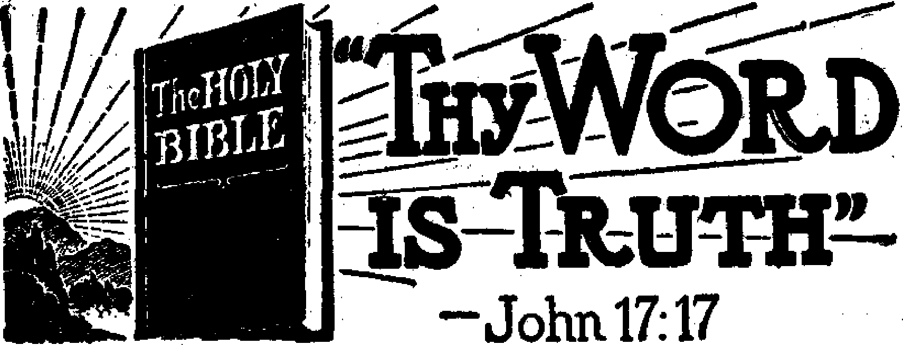
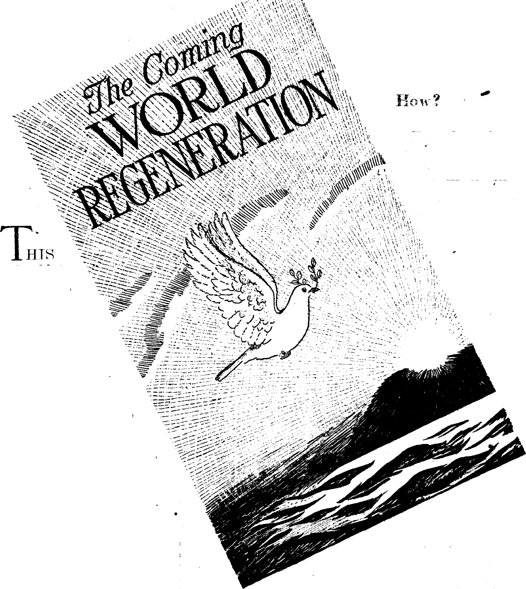

*
Jehovah’s witnesses on the Job
The West Indian Isles of the Sea
Tobacco Religion* and Cotton Saints
British and American Virgin Islands
The Citadel La Ferriere . * “Thy Word Is Truth”
The Tree of Life
ri
Magazine Witnessing in Beverly Hills, Calif.
Jehovah’s witnesses and the Catholic Church
* “Police Dogs with Horns”
Gas from Water?
Presenting “This Gospel of the Kingdom”
Gaining Emphasis in Speech
Tatian and the Diatessaron
German Jesuits- Jubilant over Japan
16
24
26
27
27
28
30
31
Published every other Wednesday by WATCHTOWER BIBLE AND TRACT SOCIETY, INC. 117 Adams St., Brooklyn 1, N. Y., U. S. A.
a OFFICERS President N. H. Knorr
Secretary W. EL Van Amburgh
Editor Clayton J. Woodworth
-Five Cents a Copy $1 a year in the United States $1.25 to Canada and all other countries
NOTICE TO SUBSCRIBERS
Remittances: For your own safety, remit by postal or express money order. When coin or currency is lost in the ordinary mails, there is no redress. Remittances from countries other than those named below may be made to the Brooklyn office, but only by International postal money order.
Receipt of a new or renewal subscription will be acknowledged only when requested. Notice of Expiration is sent with the journal one month before subscription expires. Please renew promptly to avoid loss of copies. Send change of address direct to us rather than to -the post office. Your request should reach us at least two weeks before the date of issue with which it is to take effect. Send your old as well as the new address. Copies will not be forwarded by the post office to your new address unless extra postage is provided by you.
Published also in Greek, Portuguese, Spanish, and Ukrainian.
OFFICES FOR OTHER COUNTRIES
England 34 Craven Terrace, London, W. 2
Australia 7 Beresford Road, Strathfield, N. S. W, South Africa 623 Boston House, Cape Town
Mexico Calzada de Melchor Ocampo 71, Mexico, D. F. Brazil Caixa Postal 1319, Rio de Janeiro
Argentina Calle Honduras 5646-48, Buenos Aires Entered as second-class matter at Brooklyn, N. Y., under the Act of March 3, 1879.
Notanda
* ■ . ■
New Grinding Process
♦ By a new process of finishing tools with a mirror-like polish, the Wright Aeronautical Corporation has found that the cutting tools which formerly could cut but 13 gears are now able to cut 200 to 500 and that another tool that had to be reground after each operation now machines. 28 parts. Details of the process have been released to other manufacturers.
Religious Gamblers Never Reform
♦ There is never any reform of these religious gamblers. They may close, under pressure, but reopen again right away. Holy Trinity Catholic church, St. Peter’s Catholic church and St. Casimir’s Catholic church are three of the Yonkers churches that closed temporarily when Governor Lehman asserted that Yonkers countenanced open gambling. By now, they may be at it again.
Had His Face Lifted in Vain
♦ At San Leandro, Calif., Fred T. Morematsu, Japanese youth of 23, had his face lifted and changed his name to a Spanish one, so that he might woo a young woman of Italian ancestry. His efforts seem to have been all in vain, but the young man is testing it out in the courts, to see if he must be a Japanese when he really wants to be something else.
Thailand Gets on the Band Wagon
♦ The news is swiftly getting around the world that all politicians who hope to keep their jobs or save their lives must get on the Vatican band wagon. One of the latest “seeking to establish formal relations with Vatican city” is Thailand. So says the Roman Catholic Register, and enumerates the 39 other nations that have already seen the lighten.
“And in His name shall the nations hope.”—Matthew 12:21, A.R.V.
II I I ■ I I I, — I .11. pit. I ^^^^1 lll^ II I ^| . I I ■ 'l^ I 1 ■■■■■■■* I ■ Jl I ll» ■ ■ I | ,,,■■■■ I
I , , --- ■ ■ —■ R | pi I— ■ ■ I I U R , , Kl II Iri^—-^ | , fc, —1^—..... II .................. ■■■■--'-'-- I1---" ■ ■ ■■»■■■ ^, ----------------- ■1 I * >'I I - '"I I "I
Volume XXV Brooklyn, N. Y., Wednesday, May 10, 1944 Number 643
^_T j; .y ■'■ . J'__j', ' '•'r.—" -,'1- .- .... — -j.w _ *' -■ j----■_• - ._ —- -? ■ r ■ . . ■-»*
#
T IS quite conceivable how any good man, woman or child, properly brought up, could pray, “Thy will be done on earth as it is in heaven,” because in heaven there is no sickness, no pain, no poverty, no sorrow, no death, no funerals, no cemeteries, no hospitals, no prisons, no asylums, no police, no clergymen, no convents, no saloons, no houses of ill fame, no popes, no bingo games, no politicians, no poison gas, and no machine guns. One cannot imagine one of the holy angels fitted out with a halo, a gas mask, and a basket of hand grenades, or dressed in a black Mother Hubbard, with a tin cup in hand, at the gate of some munition factory on payday.
None of the aforementioned institutions could bring about the much-desired Kingdom, which is the hope of every true Christian, but, on the other hand, J- ’ jF Z X
no true Christian could knowingly and willfully conspire against any democratic regime that 'is doing its best to give a good government to the common people and is trying to amend some of the horrible conditions such as existed in Spain in the days of King Alfonso XIII. The only reason that gentleman fled from Spain was that he knew he had done nothing for the alleviation of the woes : of the Spanish people. Like the rest of the aristocracy and the “Church”, he had bled them white. Yielding to an everrising demand for the ballot and just one honest election, such an election was held, and the honest Catholic people of Spain voted so overwhelmingly for a republic that he thought best to grab something over £2,000,000 in cash and
light out for Rome; which he then did.
The 1931 Constitution of Spain was quite similar to that of the United States. It separated . “Church” and state; it stopped the subsidies to the clergy, so as to put them, in that respect at least, more nearly on the level of Jesus and the apostles, who also had no subsidies. It provided f-or the purchase, at reasonable prices, of the huge unused estates of the nobility and the clergy, so that the poor might have a chance to get something to eat as a result of the sweat of their brows. Some of the four free-■H
‘ doms were adopted, freedom of thought, freedom of worship, freedom of ’the press, freedom of <^embly. Every Spaniard, and every stranger in Spain, was to be secure in his home, his papers, and his possessions. The state was to provide free education. The powers of the government were to emanate from the people themselves. War was renounced as an instrument of national policy. The ballot was given to women. The Catholic people of Spain, the great majority of them (and in Spain almost everybody is a Catholic), were for the new constitution heart and soul. The “Church” was against it, as a matter of course.
The “Church” in Spain was a peach. It had a catechism there which contained these words: (Ripalda’s Catechism)
Q. What sin is committed by those who vote liberal?
A. Usually mortal sin.
The officials put in the various offices of the Spanish Republic were the finest, most intelligent men in Spain. For example: When Juan Negrin became president of the republic, the big aristocrats and land owners fled, leaving behind them $50,000,000 worth of jewels and other valuables. When, as an out-f /
come of the Franco conspiracy, Negrin himself had to flee to France, he took the treasure along, making a careful inventory of it, and allowing no one to touch a penny of it. He then placed it in the hands of an honest man, Nunes, with instructions to take it to Mexico, who there placed it in the hands of Indaleeio Prieto, former war minister in Negrin’s cabinet. Subsequently that money, which Negrin honestly believed had been taken from the common people of Spain by dishonesty and oppression, was used to bring 17,000 Spanish refugees from the concentration camps of France and settle them in Mexico and Central America and South America.
W ■ - ' -
It would surprise an honest Spaniard to hear the American government referred to as ah anti-God government or a Red government, and it should have surprised all honest Americans to hear such expressions used in describing the government of the Spanish Republic. One of the many authorities for this statement is Lawrence A. Fernsworth, special correspondent of the Washington Post, himself a Roman Catholic and evidently an honest man. In one of his dispatches from Spain he referred to the "poison that has been spread abroad in the effort to make people believe that this is*an anti-God government having as one of its main purposes the crushing of religion”. He stated that in Barcelona, at the time he wrote, there were 2,000 priests living in quietness and Security, and that the only reason that the churches were not open was that the priests were engaged in a program of “systematic obstruction”. He mentions that one honest priest said to him of the conduct of most of his fellow priests, “They are more interested in having a pretext for murmuring against the government than in accepting its protection and good will.”
For three years after the people had set up their republic there was comparative peace. More than 10,000 schools were built. Five thousand libraries brought books to people who were learning to read. All the property of the “Church”, representing a third of the total national wealth, became the property of the state. In the Spanish Congress, The Cortes, 286 of the 470 deputies were for the Republic. - To be sure, 16 of these 286 were so-called “Communists” and 3 were so-called “Anarcho-Syndicalists”; but what of it?
Six Anglican, Methodist, and other clergymen, who visited Spain before Franco had accomplished his deadly purpose, signed a report on their return to England that they had found no evidence of organized godless propaganda, and intimated that Spain’s troubles were the result of the improper exercise of political activity on the part of Spain’s religionists.
Is there anything essentially “Red” about wanting to read and write? And what is there about Big Religion that makes her so greatly dread that the common people should be able to use their brains ? While the Spanish Republic was still in existence its American ambassador, Fernando de los Rios, in an address at Teachers College, Columbia University, New York city, said that the Catholic soldiers of republican Spain were so anxious to learn that they studied their lessons while the bullets intended to kill them were whistling over their heads. In a single month, to his knowledge, 587 learned to read and write. What is “Red” about that? Traveling theaters and traveling art galleries were also a feature of the days of
* the republic. At no time were there more than 50,000 Communists in Spain, and some wise and able observers say. there were only about 20,000, out of a population of 20,000,000 Catholics. How does it come that one-tenth of one percent of the population makes a republic so “Red'’ that a world war is justified because of it?
It is noteworthy that while Franco ( was working hard to destroy the Span-, ish Republic, and so to please the Roman • Catholic Hierarchy, that The Queen's Work, St. Louis, Mo., edited by evidently honest Catholics, wrote him a four-column open letter,, saying to him, in part: '
We have been assured by your friends that you are an honorable and an estimable man. We have been told by men who know you that you are a devout Catholic ... We cried aloud that as Catholics we believed in democracy ... We pray in our hearts that our faith in you is justified, General Franco . . . How eagerly we shall watch you! How fervently we shall pray that under you Spain may reach a place among the great Christian democracies of the world.
It was Catholics, not Communists, that voted the Spanish Republic into power. The way it was put by Shaemas O’Sheel, Barrytown, N. Y., in The New Republic, W.S’.
Whether the Church has lost its hold in a land where it was supreme for eighteen centuries, or whether its own communicants turned against it, the vote was a terrific indictment, calling for humility, repentance and reform. But no: when “subjects of the Church” rebel against the State they are blessed by bishops and received at the Vatican.
Why Condemn a Democracy?
What is it about the Papacy that makes it hug up to the monarchies, no matter how corrupt, and abuse the republics, no matter how well managed? This question is the more appropriate in view of the fact that in their day the Rapal States of Italy were accounted the worst-managed and most corrupt government on earth. One pope after another has condemned every liberal constitution in the world, and so the condemnation of the Spanish Republic when it tried to loose the yoke of the Hierarchy was normal, but hypocritical.
When its vicious co-religionist, Hitler, bombed Guernica, the Vatican was silent. Is it any worse to vote Liberal at the polls than to blow an entirely Catholic city completely off the map, merely for the practice intended to be applied later to the whole civilized world? (Readers will please excuse the use of that word “civilized”.)
Sherman S. Hayden, of the Foreign Policy association, an apologist for the Vatican, is reported by the Associated Press as having said at Washington, D. C.:
Critics (of the papacy) both friendly and hostile, have forecast a period of unprecedented anti-clericalism in Italy, believing that the long association of the Vatican with Fascism will reap its harvest of hatred and even of persecution. [The,Vatican] has shown an inclination toward Fascist governments in the past 20 years . . . One could not expect the church to support the Spanish republic [why not?], but it is unfortunate that such wholehearted support was given to General Francisco Franco; all the more because Pius XI seems to have suspected the true situation. . He not only suspected it, but was personally at the bottom of the whole wicked business, and with the present pope as his right-hand man, his crony.
Jehovah’s witnesses were on the job when the Spanish Republic flourished and when Franco’s treason came into the open. In their report, sent out from Madrid when that city was fighting for its life, occurred this statement:
The people are fighting for dear life; for they well know that if the Hierarchy should win, it will mean a return to slavery and the condition of the Middle Ages and - the
Inquisition for them. If it is true that the people’s anger has at times gone to extremes and vented itself against religion by the burning of churches and convents and by the killing of priests and monks, it must be stated emphatically that the latter ‘had asked for it* and that what has come to them was but their due. One may also say with equal emphasis (as the Communists have published in a manifesto) that their fight is not against religion as such, but against those who under the cloak of religion have betrayed the people and are endeavoring to continue to exploit and oppress them as in the past.
The Churchman, which had the courage to mention “that the Holy See established diplomatic relations with Japan within ten days after Pearl Harbor”, also had the courage to mention in the same issue (July 1, 1943) that:
Everyone who knows the facts admits now that our Town government’s failure to lift the embargo against Spain was due to political fear of the Roman Catholic Church, and to the personal intervention pf the then Cardinal Pacelli, who came to the United States for the express purpose of convincing the president that an embargo should be imposed upon Spain; this embargo which finally led to the destruction of the Republic of Spain. It was a clear case where a politically led religions minority terrorized the American majority into the adoption of a foreign policy that was detrimental to the best interests of the United States.
*
The Blue Division
As soon as the Hierarchy, by the use of its German and Italian troops, had helped Franco and his Moors to win the war in Spain, Franco was required, in part payment of his indebtedness, to send an army against the one country that had had enough common sense to try to help the Spanish Republic to survive, i.e., Russia. A Spanish legion was therefore sent to Hitler to help him in his Russian campaign, and, when it arrived, was virtually annihilated by the Russians. At one time Franco stated that he'had sent 90,000 Spaniards on this errand; but whether anything he says can be believed is not known.
In March, 1943, at a new session of The Cortes (the national assembly) Franco stated that the great threat of the war is Communism. He has no more sense than to believe everything that the Hierarchy tells him, even though, in his heart, he knows that they are no more to be trusted than is he himself. Six months later he was expecting the United States and Great Britain to furnish him with the arms and ammunition that he needed for this enterprise. He knew that the great men running these nations had helped him to crush the Spanish Republic ; so, he reasoned, they should help him to crush Russia also. It was not bad reasoning, but it shows how religion can make a hopeless fool out of a moron. At the same time Spain let it be known that she expected to have a share in the formation of, the coming world peace. That is a hot one!
The Blue Division did not have too happy a time under Hitler. They were underclad and underfed, insulted and treated with contempt. They complained that the German soldiers had called them r chorus boys (a delicate hint that they were there as part of the pope’s castrato choir). Also, they said the Germans had ordered them to hold sectors of the line and had then abandoned them on both flanks. A month later, October, 1943, Franco still had 10,000 men in the Blue Division on the Russian front. In November,- 1943, these 10,000 were nominally recalled to Spain, but every individual soldier received a letter from Franco asking him to join the German army. The .general Esteban de los Infantes, erstwhile commander of the legion while it was in Russia as a unit, was given one of the highest decorations of the Spanish army when he returned to Madrid in December, 1943. At the middle of January, 1944, the Russians claimed that the Blue Division was still fighting On one .of the sectors of the Volkhov front, despite Spanish press announcements that it had been with, drawn. Franco is. a practical Catholic.
S'. ■ ■
r: ■■ ■ ■ . ■ . ,
Is that why nothing that he says can be believed? many ask.
In January, 1944, the allied diplomats in Spain,, all of whom are Catholics, admitted that the Blue Division was still
in Russia, and the London papers were beginning to protest that Franco was treating the Allies in this matter as. badly as the Allies had treated the Spanish Republic only a few years previously.
The Fair and Unfair Press
The Scottish Rite News Bureau, Washington, D. C., had a hard time figuring it out as to why the Spanish Republic was being called “Red” by so many American newspapers. They ought to know the Hierarchy, by now, but they don’t. There are key men in almost every editorial and proofreading department in America to fix things up as the Hierarchy Wants it. The fact that the people of Spain are 95 percent Catholics, and that it was a Catholic republic, meant nothing to the Hierarchy, which is for itself first, last, and all the time, and for the common people never, at any time.
An unnamed but splendid Catholic gentleman, writing in the French Catholic review Esprit, a magazine without political connections, protested the inference that a section of the press had put out that the Spanish atrocities were all by the Reds. After citing a terrible instance of which he had personal knowledge where a farmer’s three boys were shot one after another in front of their
mother because they did not join Franco’s army, and when their mother wept she also was shot, he made the following manly statement:
As far as I am personally concerned, I think I can explain why I have made my choice by explaining what I have chosen. To say it once for all and frankly, I have chosen the people. I doi not say exactly the proletariat, although I admit that they form the greatest part and, doubtless, one of the most important parts of the people: no, I simply say “the people”. The people of Spain, or, better still, the people of all the Spains. The humble,
forgotten, impoverished, neglected people. The people who are the real victims of the present tragedy, as of almost all the recent tragedies in our history. The people hungry for bread and athirst for justice, ^earning (under all the fury of their explosive rage) for a little love and understanding. The people, whom we' expect to satisfy by adding a few pesetas to their salary, or by tapping them, with a gesture of friendly protection, on their broad shoulders laden with the burdens of work and contempt. I repeat, the main victims of this moment are the people : victims of the oppression and abandonment of the others, the great and the rich, the
<L
powerful and the well-placed; and victims of themselves, their own errors and their own passions which no one has taken pains to soften and to civilize. <r\Vhose fault is it if we are coarse and ignorant?” a Communist workman lately asked me with bitterness. Yes, I have chosen, and not just today: my choice, at least my spiritual choice, was made some years ago. I have chosen the people, humiliated, forgotten, brutalized, and unknown. But I have chosen them also because after long contacts with all classes of society and politics, I have reached the conclusion that it is almost exclusively the people from whom the powerful source of any life now surviving in our country can spring. The Spanish people is the only soul living among the corpses of the “aristocrats”, the fops, the intellectuals , (ah! the shameful treachery of the intellectuals), the rich, the politicians, the social climbers, the parvenus, the “right-thinkers”, the upper classes.
George Seldes, editor of In Fact, and a man who everybody knows is uncovering a wealth of truth on every subject, wrote to the New York Times when the flood of propaganda against the Spanish Republic was at its height, saying :
A tremendous untruthful propaganda has been unloosed in the United States attempting* to prove that German aviators in the ____ _ __ -p * service of Franco did not bomb and destroy this Basque city [Guernica] and machine-gun its inhabitants. The eye-witness accounts of . * - h
the Times of London, the London Express
£
and Reuters correspondents, the Mayor, the cure of the church of Santa Maria and Canon Father Onaindia of Valladolid have been attacked and an attempt made to discredit the testimony of hundreds of survivors.
The Yellow “Catholic Register*9
The Cincinnati Enquirer is a paper that, if it had the courage, would like to tell the truth. It did tell some truths oh the Spanish situation, when out came the Catholic Telegraph-Register containing this cowardly snarl, which is beneath the contempt of any decent American. The threat of boycott was put in this fashion:
Our readers have been most patient with the Enquirer. They could have organized so that few copies of this paper would have gone into 70,000 homes. They could have organized to call on the advertisers of the Enquirer and to say that, week by week, Catholics were being insulted by a superficial writer, or writers, who apparently went only to radical or Communistic sources for their information on the war in Spain. . . . We ask our readers in every parish to take up in their discussion clubs this question of the unfair presentation of the whole Spanish situation as portrayed by the writer or writers on foreign affairs in the Enquirer.
When H. R. Knickerbocker, of the proFranco Hearst press wrote how he saw grandmotherly women murdered by Franco officers, Hearst editors, to keep their jobs, changed the story so that readers could not tell which side committed these atrocities. Noble specimens of modern journalism.
It is well known that the Hierarchy now controls American movies. Para-mount got out a picture “For Whom the Bell Tolls”. Word came around that “Franco” did not like the picture. The monkeys back of him used his claws to pull the chestnuts out of the fire, and the film was altered to make it proFranco before it was permitted.
Mr. Uhl Answers Mr. Spellman
PM is the New York newspaper that is different from all other newspapers in that it carries no advertising, and is published by the multimillionaire Marshall Field III, who enjoys the great fun of publishing what he believes to be the-truth, regardless of whether anybody likes it or not.
It seems that the “Most Reverend” Archbishop Spellman, who worked for years as a clerk in the office of the gentleman who is now holding down the job of “Vicar of Christ, King of Heaven, Earth and Hell”, recently went almost around the world at Uncle Sam’s expense, to see how things were going, and, among other places, visited Spain. There he was charmed with Franco’s ways of doing things, wrote to his father about it, and in due time these private letters were published in Collier's and became public property. Then the fun started. Alexander H. Uhl, PM’s foreign editor, so it happened, knew plenty dbout Spain,, and so he sent a story to PM which read, in part, as follows:
I was a correspondent in Madrid for the Associated Press for a year before the Civil War broke out. And I lived in Madrid for more than a year and a half during the siege. What I write now is about things that I have seen with my own eyes.
The Franco revolution was the revolution of Spain’s landed proprietors, of Spain’s reactionary clergy, of Spain’s monarchial aristocracy and industrialists against the rising tide of democracy that had been rolling up each day stronger and stronger since World War I.
The government against which Franco and his generals revolted was a Popular Front government. It was a government made up of republicans, liberals, labor union parties, socialists. There was not a Communist in it.
It was a government that was determined to separate state and church, as we have in the U. S. A., and establish lay education as we have it, too.
I wish that Archbishop Spellman could have been with me in Madrid the last night that I was there. He would have found a million people of every conceivable political faith, yes, even Fascists, for the embassies and legations were filled with them. He would have found republicans, socialists, syndicalists, Communists, even anarchists. He would have found peasants who had come hundreds of miles with laden burros and sometimes little carts, driven by the Moors and Requetes from homes that were mostly hovels and camping out now in Madrid, a fabulous city that they had never dreamed of seeing, neither they, nor their children, nor their children after them.
One of the first , places that Archbishop Spellman went to see in Spain was the Escorial Palace, which he Called a “worthy memorial to Philip II, the king who built it”. For my own part Pm not sure at all that Philip II was worthy of the memorial, or that the kings and queens who lie buried in it were worthy of it and the toil of the thousands of men who built it. For me it is the mausoleum of a half-mad fanatic, who left a legacy of hate that has blighted the life of Spain for centuries. [Whew!]
He saw, too, the tomb of Jose Antonio Primo de Rivera with its solid bronze wreaths, rich and massive, and its inscription “Il Duce to the founder of the Falangists”. And, like a good democrat, the archbishop wrote: “The significance of this inscription has shriveled and will shrivel further.” The same night the archbishop had dinner with Sir Samuel Hoare, British ambassador to Spain when the Civil War broke out, I hope that he told Sir Samuel what he felt about the significance of that inscription. For it was Sir Samuel who once rebuked a pro-Loyalist American diplomat with the words: “How can you oppose Franco ? After all, he’s one of our class.”
The archbishop wrote:
“Spain’s attitude toward the United States has improved immeasurably during the past twelve months, as I learned from sources ______ <1
other than our ambassador. This change of feeling was at least partially due to the fact that America sent petroleum and cotton to Spain, and both products are vitally needed by the Spaniards. As a consequence the Spanish people have liked us better. There is very strict control, so that none of it can reach Germany. Thus, by improving our country’s
relations with Spain, Dr. Hayes fulfills the mission of an ambassador. Some criticize this policy as appeasement. The inexorable implication is that appeasement is something inherently evil, and that an * expedient thing cannot be a good thing1.” .
“The Spanish people like us better.” I hope so. But I wonder; Franco may and the forces r
which are supporting him and depending on him to keep them on top. But the people? I can think of them and appeasement only in terms of what I saw in Madrid in 1936; I remember the sudden joy that swept them when they heard rumors that we might not, after all, betray them, that we might sell their government arms as was our international right to do. And I remember the light that went out of their eyes when they knew finally that we were craven enough to appease Hitler and Mussolini, that we had decided to turn our eyes away and pass by on the other side of the street. That was one day when I did not feel proud to be an American. i
Then archbishop Spellman saw Franco. He found him a “very sincere, serious and intelligent man” and he could not doubt that Franco was “a man loyal to his God, devoted to his country’s welfare and definitely willing to sacrifice himself in any capacity and to any extent for Spain”.
I’ve never met Franco, so I cannot judge. But I remember him as a man who:
Betrayed his oath as a Spanish general of the Republic. .
Brought back the Moors to fight like semisavages against the Catholic workers and peasants of his native land.
Brought in the legions of Hitler and Musso- , lini to bomb and ravage the countryside, to use this Spain that he loves so much as a guinea pig for the world war that was to come.
Executed thousands of Spanish Loyalists, Communists he called them, and I suppose they don’t count in the sight of, God..
Imprisoned hundreds of thousands of other Loyalists, men and women workers and peasants of his native land. 1
It’s so easy to say that Franco would sacrifice anything for the welfare of Spain. What Spain does the archbishop mean? ’
... .... .... . . . ■, • ■ ..... V
The West Indian Isles of the Sea
- I k
THE diversified and intriguing “isles of the sea”, lying off the coast of Florida and south therefrom for more than a thousand miles, kribwn as the West Indies, are a world in themselves. They are inhabited by peoples as diverse and various as are the shapes and sizes of the isles. The islands have a total
area of from 90,000 to 100,000 square miles, and one may sail 2,000 miles to go from the easternmost to the westernmost points, while the extreme distance from north to south is about 1,500 miles.
The West Indian isles form, for the most part, a continuous barrier between the Atlantic ocean and the Caribbean sea and Gulf of Mexico. The Gulf, in turn, is separated from the Caribbean by the long island of Cuba, which meets the jutting point of the Yucatan Peninsula on the mainland. The Gulf Stream passes out of the Gulf of Mexico by way of the Florida Channel in its northward course.
The plant life of the islands is rich and varied, due in part to plants’ having been introduced from all parts of the globe. These continue to flourish in a wild or a cultivated state. The extensive forests produce delicious fruits and valuable woods.
The animals common to the West Indies include such interesting birds of tropic climes as the trogon, sugarbird, chatterer, parrots, and hummingbirds. In many of the island groups, however:, land animals are rare. They include wild pigs and dogs, affording “good hunting” to those who follow the steps of Nimrod. There are smaller game in the shape of armadillos, opossum, muskrats, raccoons. There are plenty of snakes, lizards, scorpions, tarantulas and centipedes. As goats abound, many of the islands afford idyllic homes, particularly as the climate rivals that of California,’ for one who present difficulties are once settled, a person having such predilection will be found making his way to one of these islands with a companion of his choice, envisioning a numerous progeny, all faring sumptuously every day on goat’s milk. It is said that in these islands sheep are kept for the sake of their flesh alone, as the climate is not adapted for woolgrowing.
entire island chain, including the Bahamas. Later came the warlike Caribs *
(whence the name of the Caribbean sea) relishes the milk of these creatures, and ousted the less aggressive Arawaks, (Proverbs 27:27) Perhaps, after earth’s . at least from many of the islands. In the
The islands and groups of islands that make up the West Indies have in some instances more than one name, but the classification that is usually followed is this: To the north lie the Bahamas, rising above the waters of the Atlantic from the Great Bahama bank. Directly south of these numerous and sandy isles comes Cuba, with Jamaica to the south of it, while to the east of these two large islands lie Hispaniola, Puerto Rico and the Virgin island group. Then, extending southward in a semicircle come the Caribbee islands, called the Antilles proper, divided into two groups called the Leeward and Windward islands by the island of St. Lucia. Trinidad lies close to the coast of South America, while farther west,. and also not far from the mainland, lie the Dutch West Indian islands of Curacao, Bonaire, and Aruba.
As the history of the islands extends back less than 500 years, the designation “prehistoric” does not denote any necessarily great antiquity. The people that lived on the islands before their discovery by European explorers were Indians. One group, the Arawaks, had apparently made their way from the South American mainland through the
Bahamas the people called themselves were accepted as messages or revelations Yucayos, the chief tribe of Cuba being from the gods or zemi. /
called Ciboneys; all being branches of When Columbus arrived upon the • scene the islands were well peopled and
the American Indian race. The larger
islands were thickly populated by these Indians. They had acquired well-developed arts, the Arawaks being devoted chiefly to agriculture, while the Caribs depended largely upon fishing and fighting. The former inhabited the Bahamas and the larger islands, while the Caribs lived mainly in what are now known as the Lesser Antilles. The Caribs had the inconsiderate custom of taking the Ara-wak women as wives, when they could get away with them. As a result, some of the islands had an arrangement of so-called dual-tongued family life, the women speaking Arawak, and the men and the older boys speaking Carib. The boys accompanied their fathers on their venturous voyages to other islands as well as on their fishing tours.
" p f-
Tobacco Religion and Cotton Saints
The religion of the early peoples of the West Indies had its roots in a land of nature worship. The sky and the rain, and other natural phenomena, were associated with various deities, and these were propitiated with offerings of one kind or another. The supposed spirits of ancestors and of trees were also objects of common worship, and were manifestations of demonism, still rampant in the islands, now in the form of voodooism. Most of the idols were fetishes; called ■ zemi. This word seems to have been used to designate not only the god itself‘but also images of wood and of cotton and charms and ceremonial paintings.
The tobacco plant had a religious significance among these Island Indians. It was called cohoba or cogioba, and the smoke of the leaves was inhaled through tubes called tabaco, which name is now given to the plant. The smoke was inhaled at important religious ceremonies and the officiating priest continued to inhale until he was in a comatose state and experienced visions. These visions - ■ <
;MAY 10, 1944^ '
for the most part the Indians were not warlike. They received the newcomers with reverence, impressed by the size of the ships and the unwonted fairness of the white - complexioned visitors.
Columbus called the islands the Indies, thinking he had found what he had sought, a new route to India. He little realized that he would have to travel a good many times the distance he had come to reach his objective. Only after his death was that toilsome journey made by others.
After Columbus had made his report, and all Europe had been stirred by the news, the name of Antilles become associated with the islands, under the supposition that he had reached the fabled country of Antilla, which was believed to lie far to the west of the Azores. Others associated the name with a large island which was supposed to have sunk beneath the Atlantic. As a matter of scientific investigation the islands are believed for the most part to be the summits of submerged mountain ranges,. Columbus found the climate to be agreeable, the extreme heat being greatly moderated by steady winds. The nights still are cool and refreshing. Snow is unknown, and only an occasional frost. The seasons are a short, wet spring, followed by a brief dry period with the thermometer at about 80°. Then the heat increases until September, after which start the great rainfalls of the year, often accompanied by destructive hurricanes. The dry season begins in December and lasts until April, but is relieved by occasional showers.
After his first discovery Columbus made seyera! more, finding most of the larger islands and ultimately reaching the coast of South America and Central America. Spain quickly saw the importance of the discovery and was not slow in turning it to account. Settlements
11 were made on all of the main islands and many of the smaller ones. The natives were reduced to slavery, being distributed, with their lands, among the con-quistadores that came from across the sea. But do not think that the beneficent and religious Spaniards failed to give the Indians something in return for their freedom and their lands. Oh no! They brought them “religion”. True, the Indians already had “their own religion”, but they had better accept the Spanish variety or else—. The Indians were no match for the “civilized” Spaniards with their religion and their guns and other means of converting the heathen. As a “master race” the Spanish newcomers must have labor performed for them by others, and the Indians were it, as long as they lasted under the grueling bondage.
Driven to desperation by their oppressors, the Indians took up what arms they could against their masters, with the result that they (the Indians) were practically exterminated. Many sought escape by suicide rather than perish in the mines or endure the indignities heaped upon them by the intruders. The native peoples in a short time almost ceased to exist.
With the blessing of the pope, Spain tried to hold on to her vast “possessions” in the newly discovered hemisphere. But the British and the Dutch could not see it that way. The pope might “give” half the world to Spain, which gift, after all, cost him nothing, but he could not quite blame Britain and the Netherlands for feeling slighted. At any rate, British and Dutch seamen came around to take a look to see what they could see, and get. With such an abundant source of wealth there should be enough to go ’round.
French and Danish seamen also came to see if they could not get sojne of the almost fabulous wealth of the new lands, and soon there was a dandy free-for-all, everybody seeing what he could get. Of course, they did not consult the Indians about it.
The English began colonization in the West Indies by establishing a settlement on the little island of St. Christopher (now known also as St. Kitts). It was only 23 by 5 miles, but it was a start. Other settlements followed. rapidly, on St. Eustatius, Barbados, Tobago, and St. Croix (all in that same year, in fact). By 1713 Britain had so well established herself in the West Indies that the Treaty of Utrecht recognized her claim to all of the Bahamas, the Caymans, the Caicos and the Turk islands, as well as Jamaica and several other islands. The agricultural possibilities of these islands were one of England’s main concerns, and the results were highly profitable.
In the same year in which England began to colonize in the West Indies the French West India Company was incorporated and a settlement was made on the same-island on which the British had made their start. Both were driven out by the Spaniards in 1630, but not to stay.
It was about this time that the buccaneers, Dutch smugglers and British and French pirate’s began to carry on their activities in the seas surrounding the West Indies, doing considerable damage to more legitimate traders. Their exploits make a colorful chapter in the history of these islands, a chapter which was not completely closed until the early years of the nineteenth century.
' Sugar cane began to be grown in the West Indies in 1640 and brought a marvelous prosperity to the islands. Crowds of adventurers were drawn to the islands and in Barbados alone 50,000 British subjects are said to have arrived in one year about this time.
For many years the British government used the islands as penal settlements, employing the prisoners on the plantations.’ The Portuguese were the first to import Negro slaves, and their example was quickly followed in other
West Indian colonies. The slave traffic continued for about three centuries.
In 1660 the French and English tried to come to some decision about a division of the islands, and did come to some agreement. But the continued wars of Europe variously affected the fortunes of the islands, so that they frequently changed hands. The aboriginal inhabitants were in time segregated in specific localities, i
The cane-sugar prosperity could not last forever, and was faced, after a time, with the beet-sugar industry of Europe. Sugar, nevertheless, continued to be the mainstay of many of these islands, particularly of Cuba.
In time the Negro and mulatto population of the French, British, Dutch and Danish islands became so numerous that it was no longer possible to keep them under control as slaves. There were repeated revolts, particularly in Haiti, where at last the white population was almost wiped out. The British freed all slaves in their West Indian possession in 1838, and the French and Danes did the same ten years later. Abolition came more slowly in the Dutch and Spanish colonies. The Dutch freed their slaves in 1873, while the Spanish held on to theirs until 1886. Emancipation was not an unmixed blessing. There was a drop in economic prosperity in islands where the freed slaves became dominant, and it cannot be said that political and social conditions improved even for the emancipated.
The West Indian islands have undergone a great change in the few hundred years of European occupation. The Indians have all but disappeared. Only on St. Vincent and Dominica are there any considerable numbers left, and even these are of mixed blood. In Cuba and . y __■■ ■
Puerto Rico the whites predominate, constituting about three-fourths of the total* population. In all the other islands the colored race of African descent greatly
outnumbers the whites and Indians. With the exceptions mentioned the West Indies are practically a racial extension of Africa. In Trinidad there are, interestingly, many East Indians, brought from the other side of the world, and constituting almost a third of the total population. These Orientals are now where Columbus expected to find them some four hundred years ago. In the Dutch West Indies and in the Bahamas the proportion of Negroes is not quite as high as in the other islands.
*
The Bahama Islands
• Having completed this rather general survey of the West Indies, a more particular consideration is given to the various islands comprising the archipelago.
Closest to the North American mainland lie the Bahamas, whose chief distinction in the minds of many is the fact that the former King Edward of England, now duke of Windsor, with his fair lady, has for a number of years lived here. He is the governor of *this group of islands, with his capital at Nassau, on the isle of New Providence. The Bahamas are also noted for the fact that Columbus’ first landing place in the new World was, it is believed, on the small island now ingloriously called “Watling Island”, though Columbus gave it the more euphonious name of San Salvador; He appears to have been quite religious, in harmony with the custom of the times.
The Bahama 'islands were formerly called the Lucavos, because inhabited by a native tribe by that name. They called the island on which Columbus landed Guanahani. The Indians were, as a result of the Spanish merchandise in the souls of men, removed to work in mines elsewhere, and the islands were left depopulated.
The Bahamas stretch over a distance of some 780 miles, but the total area is only about 4,400 square miles. The islands are believed to be simply piles of wind-blown sand and coral shell, and at one time they extended over an area greater than that of the island of Cuba. Much of the land has sunk beneath the ocean and constitutes what is known as ■ * ■.
the Little and the Great Bahama banks. There are but three channels for the passage of ships.
The Bahamas were deserted and uninhabited until 1629, when the' English started a settlement on New Providence. They were later expelled by the Spanish, but came back. Thrown out once more, they again returned, this time to stay. Tories from the American colonies came to the island at the time of the Revolution, bringing their slaves with them. For a short time during the Revolution the Americans held the island of New Providence. Cuba also had it for a few months, but the English finally became the acknowledged owners.
Today the islands seem remote from modern times, and, due to the war, even Nassau, popular as a resort, is not what it can be with the help of tourists. Many of the islands are seldom visited by outsiders, and the natives see little of movies, electric lights, and other modern inventions. Their only contact with the world is by means of small mail boats that make periodic calls.
The big business of the Bahamas is sponge-fishing. The sponges are often of ■ great size. Other products are sisal, lumber, tomatoes and shells.
The total population is around 70,000, of which 12,500 live in Nassau. Some of the islands are sparsely settled. Villages lie peacefully in the all but tropic sun. Ruins,of old mansions tell of a more active past. Sugar was once exported in quantities, but now salt has taken the place as a product of many of the islands. The’ sea, flooding the marshes, yields large quantities for shipment to all the world. ’
■l . .
Schools in the Bahamas are main-• tained by the government and the church, keeping the inhabitants religious.
The islands at the southern end of this archipelago are called the Turk islands.
These and Caicos islands are under the same administration as Jamaica, just on the other side of Cuba. But you can’t
Cuba is the largest and for many reasons the most beautiful of the West In" ■ ■ . . I1
dian islands, and is called “The Pearl of the Antilles”. It merits the distinction in many ways, having a delightful climate and unrivaled scenic beauties, besides abundant natural resources.
Because of its importance a separate article will be devoted to a description and study of its outstanding features. So wejpass on to Jamaica, another of the British West Indies. The name of the island is derived from a native Indian word “Haymaca”, meaning “island of fountains” or “well-watered”. Its length is 144 miles, and breadth 49 miles, at the extremes. The area is 4,540 square miles.
On the eastern end of the islands are the Blue mountains, the highest peak being 7,388 feet. While the island is largely a plateau, frequent depressions are found having areas of hundreds*of square miles each, while some are comparatively small and are called “cockpits”. It is thought that these depressions are the result of the action of the elements, but how the immense areas of land could have been thus removed is difficult to see. There are no rivers which might have carried off the soil or worn away the ground. Yet in the limestone regions there are interesting caverns of considerable size and beauty, and often these contain Indian relics. There are places of considerable scenic beauty.
From Jamaica come such desirable products as sugar, oranges, ginger, lime juice, tamarinds, nutmegs; dyewoods and cabinet woods; and the less desirable products of cacao, coffee, tobacco, and rum. Bananas also are exported in great quantities. Much of the produce of Jamaica is exported to various parts of the United Kingdom.
The inhabitants are chiefly Negroes. They are dependable and industrious.
There is but a small white population. They constitute but If percent of the total. There are likewise some Chinese and East Indians. The total is now about a million.
In 1935 a hurricane swept the island, which uprooted 2,000,000 banana trees bearing ripening crops. . .
Jamaica has had considerable labor trouble in recent years. The workers are seriously underpaid and generally undernourished. Hence demonstrations included the stopping of bread vans by the strikers and distributing the.bread gratis among the strikers and their families. The government resorted to force in putting down the uprising. No sooner was one strike settled than another would begin. The authorities did not show more wisdom in handling this situation than they did in suppressing the message of Jehovah’s witnesses in the island, or rather, attempting to do so by .denying the importation of the Society’s literature.
Market-Day at Kingston
Queen Street, Kingston, is the center of Jamaica’s market-day activities. Dark-skinned farmers from many miles around start the day before and all converge upon the town, traveling along the not too modern roads by various means, carrying their wares upon donkeys or in small trucks, if they are so fortunate as to have the latter. Bringing mangoes, choehos, fruits, cocoa beans, and ginger, they come to the Saturday sale with a holiday air, and are glad when, at the close of the day, they can return with an honest dollar earned.
Special instruction at the schools is provided for agriculture, as there are a million acres of land under cultivation, although of this total only about onefifth is in tillage. Stock-raising is important. Formerly the island was occupied by large plantations; but when slavery was prohibited large numbers of landowners abandoned the island.
At the time of the slave trade Port ■
Royal, Jamaica, was a kind of center for slave distribution to various parts of the West Indies and the mainland. Port Royal was once a town of great wealth and importance, but a series of catastrophes accomplished its ruin. An earthquake swallowed tip a great part of the city in 1692, the land sliding into the sea. Hurricanes in 1712 and 1722, and a great fire in 1815, destroyed what was left of the original town. I '. ■.
Education and Religion
There were 664 public elementary schools in Jamaica in 1939, with a total * F
enrollment of 163,732 pupils. Government training colleges, four in number, provide for the training of teachers. There are a number of secondary and industrial schools supported by the state or endowed.
The Church of England hold on Jamaica has been waning in the last seventy years. It has now long been “disestablished and disendowed”. It is to be feared, however, that religious totalitarianism under the subtle lead of the Jesuits has gained ground in Jamaica. The measures taken against Jehovah’s witnesses are an indication of this. Satan, who is 'the god of this world setup’ (2 Corinthians ,4:4), is out to extinguish the light of truth, and the activities of Jehovah’s witnesses are most distasteful to him and his. Proscription, prohibition of freedom of speech and press, and the ban, have been and are the favorite instruments of those who have the spirit of the Devil. These have been put into effect in Jamaica, a part of the great “free” British Commonwealth. Why are those who professedly stand for freedom so deathly afraid of the publication of the truth? Why do they think they can hoodwink the people by sitting on the safety valve ? Do they not realize that damming up the river of truth only causes its waters to rise and increase in power ? It is so with the truth of J ehovah’s kingdom. The work in J a-{Continued on page 18)
I
The Tree of Life ■ I1
*- ■ ■ ■ ■ THE first book of the Bible mentions three classes of fruit-bearing trees in the garden of Eden, to wit: (1) “every tree that is pleasant to the sight, and good for food”; (2) “the tree of life also in the midst of the garden”; and (3) “the tree of knowledge of good and evil”. .(See Genesis 2: 9.)
God told His creature Adam that he might eat of all the trees that were good for him. “And Jehovah God took the man, and put him into the garden of Eden to dress it and to keep it. And Jehovah God commanded the man, saying, Of every tree of the garden thou mayest freely eat: but of the tree of the knowledge of good and evil, thou shalt not eat of it: for in the day that thou eatest thereof thou shalt surely die.” —Genesis 2:15-17, Am. Stan. Ver.
There is no evidence tfeit Adam knew anything about the tree of life that was in the midst of Eden. On the contrary, he must have been ignorant of it, because there was no specific command given to him concerning it. Lucifer, as the officer or invisible overseer who was clothed with the power of death and entrusted with the high office of “covering cherub”, would, of course, know all about the tree of life. The fact that God gave Adam command about other trees in the garden and said nothing about the tree of life is evidence that man knew nothing about this tree. The eating of the tree of knowledge of good and evil would, doubtless, open the way so that Adam would shortly know about the tree of life. That Adam had had no. opportunity to eat of the tree of life and that he must therefore have been in ignorance of it until immediately before being expelled from Eden is proved by what took place just after he and his wife Eve sinned by eating of the forbidden fruit.
God summoned the guilty parties before Him. Upon a full hearing of the fact, Qod pronounced judgment against the woman and against the man and against the serpent which the traitor Lucifer had employed to deceive Eve. The final judgment against Lucifer, who now became Satan the Devil, is set forth ins Ezekiel’s prophecy, and it provides that in due time he should be destroyed and never be again. (Ezekiel 28:13-19) After the pronouncing of judgment against man God addressed someone else then and there present, and it seems almost certain that He was speaking to His only-begotten Son, the Word, or Logos, who later became Jesus. Genesis 3:22 reads: “And the Lord God said, Behold, the man is become as one of us, to know good and evil: and now, lest he put forth his hand, and take also of the tree of life, and eat, and live for ever.” To be particularly marked here are the words of Jehovah: “Man is become as one of us, to know good and evil.” .
Knowing the situation was critical, God seemingly acted at once, before man had an opportunity to get to the tree of life and eat of it, and even before unfaithful Lucifer had time to inform man of the location of the tree. Jehovah’s words to the Logos were cut short; the sentence seemingly stops in the middle without being finished, to wit: “And now, lest he put forth his hand, and take also of the tree of life, and eat, and live for ever” According to this record God did not speak another word, but acted immediately. His action is recorded in the next sentence: “Therefore the Lord God sent him forth from the garden of Eden to till the ground from whence he was taken. So he drove out the man; and he placed at the east of the garden of Eden Cherubims, and a flaming sword which turned every way, to keep the way of the tree of life.”—Genesis 3: 23,24.
Doubtless it was God’s purpose to permit man at some time to partake of the tree of life and live forever. Had man proved faithful under the test, that would ’have been his reward. Lucifer therefore caused 'man to fail in the test, caused him to fail to retain life, and caused him to bring upon himself and all his progeny the great sorrow and distress that have afflicted humankind down through the centuries.
Lucifer had manifested his unfaithfulness and treachery, and without doubt he intended to act as quickly as possible and lead sinner man to the tree of life and let him eat of that fruit. He knew God had given His word that the fruit of that tree was a fruit of life, and that if man should eat of it he would live and not die. Lucifer therefore reasoned that he would be able to prove to Adam and Eve that God was purposely deceiving them and keeping them ignorant and keeping them away from the opportunity for life; and that he, Lucifer, was telling them the truth and was bringing them a great blessing, and that hence he was entitled to be worshiped by them and by all their offspring.
Had Adam eaten of that fruit of the tree of life immediately he could not have been put to death by Jehovah himself, because God cannot be inconsistent. God had given His word that this was a tree of life; and for Him to permit man to eat of it and then put him to death would make void God’s word, which is impossible for God to do. (Psalm 138:2; Isaiah 46:11;. 55:11) Therefore, to keep His word inviolate and enforce His judgment against Adam, God at once expelled him from Eden and set a powerful officer on guard with a flaming sword turning in every direction, to keep man out of Eden and away from the tree of life.
Why did not God kill man forthwith? Other scriptures show that at that time man had not exercised his powers to
beget children. No children were born in Eden. Hence God permitted Adam to continue on earth 930 years, during * which time he begat and brought forth his children. All of these have suffered from the baneful effects of sin, eventuating in death; but God knew that some of Adam’s descendants would have a love for righteousness and would place themselves on Jehovah’s side and prove that He can put men on earth who by God’s grace would keep their integrity unto Jehovah God and prove the Devil a liar. This would be for the vindication of God’s name, upon which name Satan the Devil had brought great reproach.
Adam was sentenced to death. This * sentence was enforced against him by compelling him to eat of the fruits of the earth outside of Eden, which eating gradually resulted in his death. Within that period of 930 years his children were brought forth. While ..these were not formally sentenced to death, they were all born sinners. The imperfect Adam, undergoing the death sentence, could not beget perfect children. Hence it is written at Psalm 51:5: “Behold, I was shapen in iniquity; and in sin did my mother conceive me.” To the same effect is the apostle’s statement in Romans 5: 12: “Wherefore, as by one man sin entered into the world, and death by sin; and so death passed upon all men, for that all have sinned.” Thus are seen the terrible and far-reaching effects of this rebellion. It has brought all the suffering and sorrow, sickness and death, wars, famine and pestilences, to which humankind have been heir during almost sixty centuries. The very first son that Adam had turned out a murderer, and Lucifer, alias Satan, induced him to commit the murder; therefore Lucifer was a party to the crime. Lucifer is guilty of every murder that has ever been committed on this earth, and was an inducing cause of man’s failure to prove worthy of the privilege of eating of the tree of life in the garden of Eden.
The West Indian Isles of the Sea (Continued from page 15)
maica of those who stand for the heavenly rule is not stopped and can not be stopped. True the Witnesses are prohibited from importing literature to carry on their, work. They cannot even import Bibles! And what is the result? They make more diligent use of those they have and go everywhere preaching the word, even though deprived of the privilege of doing so with the aid of the printed page. Even the children, and not a few, are publishing the truth, talking like real grownups with all seriousness and understanding about the things of the kingdom of God. This educational work is progressing in spite of the efforts of religion to suppress it.
Religion has a considerable hold on the island. Many of the primary schools are under the control of religious organization. There are 118 government schools, to compare with 193 Church of England schools, 111 Baptist, 74 Methodist, 57 Moravian, and 126 of other denominations. The religious schools receive government subsidies.
Trinidad
Because Trinidad, at the southern end of the Caribbean, occupies almost as large a part in the British West Indies as does Jamaica, it is considered next, bypassing for the present the larger islands in the immediate vicinity. The population of Trinidad, together .with its dependency, the island of Tobago, is 500,000. It is about 50 miles by 35 miles in size, having an area of 1,862 square miles. It is therefore considerably less than half the size of Jamaica. The land is mainly level, though there are some hills at the north and south ends of the island. It is practically a continuation of the mainland of South America, and the gulf between the island and the continent is comparatively shallow. Trinidad has several “mud volcanoes”, and it is unique for its asphalt-producing “Pitch Lake”, which is located about 40 miles southeast of the capital, Port of Spain. It is about three miles in circumference; and the surface is sufficiently firm to permit one to walk upon it, although when the sun shines upon it footprints will be left in the pitch or asphalt. Pitch is continually dug from the surface, and the holes or depressions thus formed always fill up again, from subterranean pressure. The lake has been worked for many years, but always continues supplying more asphalt.
Near the capital in the opposite direction is the great Maracas fhlls, twice as high as the Niagara, and a striking feature of the scenery.
Trinidad has in recent years become an oil-producing country, which fact has contributed greatly to its prosperity. The estimated production in 1940 was 20,300,000 barrels of oil and benzol. A large part of this is refined on the island itself.
Trinidad is productive of many tropical fruits and woods. Cacao and sugar are staples, but Trinidad is not a one-crop country, and has therefore suffered less from depressions than some of the other-West Indian islands. It is likewise free from the hurricanes that frequently cause havoc in the neighboring islands. John Paul Jones was once stranded on Tobagos. This island is likewise believed to have been the one that is described in the adventures of Robinson Crusoe.
The population of Trinidad is quite a mixture both as to race and as to language. One-third of the inhabitants are from the East Indian islands, on the other side of the world. For the rest, the majority are Negroes or mulattoes, with a relatively small number of whites, made up of descendants of the British, Spanish, French and Portuguese settlers. English is spoken in the towns, but in the country districts a sort of French is spoken. There is also a variety of religions, and in the monetary field there is further diversity, for the government keeps its accounts in English money, while the people generally use United
18
CONSOLATION
States currency. English money, however, is legal tender.'
The schools are maintained, for the most part, by the various religious sects, both Catholic and Protestant, and receive state aid. (A somewhat similar scheme appears to be the Hierarchy objective in the United States.)
While Trinidad is a part of the British Commonwealth, it does not appear to be overly democratic, and probably never made a pretense of being such. During 1943 some of Jehovah’s witnesses were prosecuted for having Watchtower publications in their possession, and one of them was fined $240 with the alternative of spending four months in gaol (jail to you). The witness went to the gaol and continued his witnessing there, for to those who are free in Christ "stone walls do not a prison make, nor iron bars a cage”.
Those who desire to stop in Trinidad longer may avail themselves of the,ency-clopedias. This brief stop will have to suffice for the present purpose. The remaining British West Indies are next in order. They are mainly the Windward and the Leeward islands of the Lesser Antilles. Most of these belong to Great Britain, with the exception of a few ‘ small islands, held by the United States and the Netherlands and some minor French possessions, which include the island of Martinique, recently much in the news, being the location of a French naval base. The Netherlands also has some islands along the coast of Venezuela, farther west, but these will be considered later.
The British West Indies are intriguing climes, having an English aspect, yet being peopled by a race composed of dark-skinned members. These islands have lovely little towns laid in sunny and verdure-clad hills, surrounded .or bordered by the blue of the ocean. There are luscious fruits and gorgeous flowers and marvelous scenery. And some day,
when the curse of sin and death are effaced from the earth, these isles will literally carry but the prophecy of Isaiah (42:10), “Sing unto the Lord a new song, . . . the isles, and the inhabitants thereof.” The symbolic fulfillment is now true of those who, though they be scattered, are united in the praise of Jehovah.
Among the Lesser Antilles are some places with historic associations of interest to others besides those directly involved. The British island of Barbados, farthest east of the island chain, is the only foreign country ever visited by George Washington (of whom you may have heard). It was at the little island of St. Eustatius that the U. S. flag received the first foreign salute, in November, 1776, when the Baltimore privateer Andrew Doria, stopped there. Alexander Hamilton, aristocrat among the American Revolution statesmen, was born on the little island of Nevis, in the city of Charles Town, January 11, 1757. Of him it is said that ‘Tie left as deep a mark on our political institutions as any other statesman'America has produced”. Another West Indian of renown was the empress Josephine, almost as well known as her noted husband Napoleon. She was born at Trois Islets, Martinique, and was a widow when she met Napoleon. When he became emperor, in 1804, she was crowned with him. (See the Watchtower publication Government, page 68.) z
In some of the islands the styles of more than a century ago still persist, the women wearing, voluminous skirts, caught up to reveal equally voluminous petticoats, well-starched. These costumes are adapted from those worn by the empress Josephine, and are worn by white and black alike. _ r
. Diamond Rock, a little islet jutting out from the blue of the ocean like a rounded haystack, was officially listed as one of Britain’s men- o’-war in 1803. It had been used by gallant British as a base of operations, against Martinique.
The island of Guadaloupe, which now belongs to France, was discovered by Columbus on his second trip. It was here that he first saw the Carib Indians, who inhabited most of these smaller islands. They are now living in a reservation on the island of Dominica, a remnant few in number.
As far as the British islands in the Leewards and Windwards are concerned, they are absolutely under the control of the British colonial office. The official members of the councils predominate and the unofficial members are nominated by the crown. In Barbados (as in the Bahamas and Jamaica) there is a measure of self-government. The laws in the colonies are English, local statutes meeting local needs. Each governor, appointed by the crown, acts under the advice of a privy council. Until 1940 only Jamaica, Barbados and St. Lucia were fortified, but since the Anglo-United States agreement of September of that year American air and naval bases have been established in the Bahamas, Jamaica, St. Lucia, Antigua, and Trinidad.
Sugar cane is grown extensively in the British West Indies, except in the Bahamas. In Trinidad and the Windward islands cocoa is of greater importance. Spices are also grown in considerable quantity. All contribute to prosperity. The tourist trade which has been an important factor in the economy of these West Indian islands has been practically at a standstill since the war. The islands, all taken together, are not self-supporting, with all their abundance. There are many things important in modern life which they do not produce. This drives home the fact that no part of the earth is self-sufficient, and that the true basis of earthly happiness and prosperity is not competition, but co-operation. The West Indies import nearly all needed manufactured goods.
There is no need to tarry long in the Virgin islands. Columbus named them, but not in honor of Mary. He had in mind Ursula and her companions, a company of religious women honored by Catholics. Many of the Virgin islands are so small that they remain uninhabited. Those that are inhabited are of healthful climate. The British Virgin islands are now of secondary importance. Those held by the United States are important because they furnish desirable harbor facilities in connection with the defense of the approaches to the Panama canal. St. Thomas, at Charlotte Amalie, has a fine harbor, nearly midway between New York and the Panama canal. The Virgin islands of the U. S. formerly belonged to Denmark, from which they were bought at the then unheard-of price of $25,000,000. They include St. Thomas, St. Croix and St. John and about fifty small mostly uninhabited islets. The area < of the three larger islands is but 133 square miles, and the population is 25,000, speaking the English language. Education, as in the United States, is compulsory. Rum is produced on a large scale, the government having established a rum distillery backed by 5,000 acres of sugar cane and two sugar mills. The natives were given citizenship in 1927, and under the organic act of June 22, 193$, all who can read and write English may vote. So much for the insignificant and important Virgin islands.
Although Germany dominates the Netherlands for the time being, the flag of the Netherlands still flies over the territory of Curacao, which consists of three Windward islands lying close to the Venezuelan coast, arid three of the Leewards, Saba, St. Martin (half of which is French), and St. Eustatius. These islands are ruled through governors with their advisory councils, much as are the English Indies, but with more of democracy’s forms and freedoms.
Curacao is the most important of these Dutch possessions, and handles a large part of the products of Venezuela with its large exports of oil, refined on Curacao. Before the discovery of the oil Curacao’s main export was an orange-flavored liqueur much in demand.
Curacao colony consists of Curacao itself, 210 square miles of island, Bonaire, 95 square miles, Aruba, 69 square miles, St. Martin (southern), 17 square miles, Saint Eustatius, 7 square miles, and Saba, 5 sqnarje miles; with a total population of 90,870. The capital is Willemstadt, and has one of the best harbors in the West Indies. The subsidiary islands are governed by representatives of the governor of the colony. Exports from the colony run into hundreds of millions of “guilders” (worth about 40c each in American money). The refinery on Aruba has a capacity of well over 250,000 barrels of crude oil daily, and employs 5,000 workers.
The French possessions in the West Indies have shrunk to a small part of their former extent. They include a portion of St. Martin, the Guadeloupe group, Martinique, and a few small islands.
The Guadaloupe islands have a total area of 688 square miles, and a population of well over 300,000. The area of Martinique is 385 square miles; population, 234,695.
And now, having tarried in these smaller isles long enough, it will be of interest to make a brief stop in Hispaniola. This island is the second-largest of the Greater Antilles. Haiti occupies the western third of the island, and the Dominican republic the eastern two-thirds. The population is chiefly Negro, the rest being mulattoes descended from former French settlers. These, together with the 3,000 white foreigners, number about 3,000,000. Roman Catholic is the state religion, and the clergy are French, which is the official language of the country, although a dialect, French Creole, is spoken by most of the people. In about a thousand schools a hundred thousand pupils receive their education.
The most' important crop is coffee, There is an increasing production of cotton, sugar and logwood. Sisal (for ropes), tobacco, tropical fruits and nuts are also gaining ground as sources of wealth.
» It was Columbus that called the island
La Espaniola (Little Spain), of which Hispaniola is a corruption. A settlement was begun on the island and the Indians were slaughtered or worked to death in quest of gold. Within twenty years from 1492 Negro slaves were imported. When the Spanish went to the mainland they left the island deserted. Not long after, the French and English buccaneers settled on Tortuga, a near-by smaller island, but came to Hispaniola a little later and the part they occupied was ceded to France. The efforts of the French resulted in the establishment of the prosperous colony of St. Dominique. Irrigation, and, unfortunately, slavery, contributed to its progress. Sugar, cotton, coffee and indigo were raised. Descendants of slaves and their white masters, i. e., mulattoes, gained freedom and many became property owners. They gained political rights in 1789 and fierce struggles between them and the whites resulted. On January. 1, 1804,
Haiti won its independence from France. The first governor, Dessalines, massacred all the whites. He then crowned himself emperor, but was assassinated after a reign of but two years. He was a bad actor, and his successor was, if anything, worse. H6 made himself king, Christophe Henry the First. But he accomplished some remarkable things, among them the building of a stupendous palace on the top of a mountain, so amazing an undertaking that the mystery of its construction almost equals that of the pyramids.
Those who have seen the citadel La Ferriere wonder how the builders ever succeeded in carrying the great stones up the rugged trail to the brow of the precipitous heights upon which it is built. Christophe was the opposite of the meek and lowly one whose name constitutes part of his own. He ruled with despotic ferocity, and is reputed to have shot down any man who complained that the burden he was called upon to bear in the construction of La Ferriere was too heavy. The walls stand 150 feet high, rising often from a mountain steep many times their height. Within are tiers and corridors, the lower ones showing cells where prisoners were kept confined in such a way that they had to stand upright for days on end. Upon the parapets are guns, and even yet piles of cannon balls remain as a testimony to the military spirit of the illiterate ex-slave that had the structure built. If the Haitians suffered at the hands of their white masters, they suffered vastly greater woes under the domination of one of their own race. Christophe’s sense of humor included such pranks as inviting those whom he suspected of opposing him to La Ferriere and taking them on a stroll through its vast corridors and halls, finally ending up on the top' ramparts, from which he would suddenly push them down into the abyss below. It is believed there is still treasure hidden in La Ferriere’s secret chambers. It is guarded by the government.
Port-au-Prince, the capital, is the site of the palace Sans Souei, also built by Christophe, and second in stupendousness only to, the citadel. Yet Christophe’s reign came to an end, and he was followed by a. bewildering succession of “presidents”, until the procession bearing the dismembered body of the last in line was overtaken by the occupying marines sent by the United States. Nineteen years of American occupation brought order out of chaos. There were some charges that American job-holders were racketeering, that the Americans held most of the important offices, and generally did not even speak the language of the people. Inefficiency was also charged, and voices demanding the immediate withdrawal of the Americans were not wanting. Other Haitians would gladly have had the Americans stay. An article in The Nation of March 6, 1937, lists the beneficial results of American occupation as follows:
The American occupation did a poorer job here than in Santo Domingo. But the marines did accomplish certain things. They taught the Haitians the necessity of organization. They imbued them with a great concern for public hygiene and sanitation, though this work would be far more efficient today if the Haitians had been allowed a greater measure of collaboration in the days of American rule.
They built some roads, not many, and demonstrated that good roads are the key to advancement in every phase of the national life. And they ordered well the public finances. But there the list of American achievements just about ends.
Already, since the Americans have withdrawn, the president of Haiti, Stenio Vincent, has breached the constitution and made himself a dictator, however conscientious. And so it goes.
This necessarily brief view of Haiti would not be complete without some reference to the widely prevalent voodoo-ism. Those who have had opportunity to observe the weird practice, if only in part, are slow to assert that there is “nothing to it”. On the contrary, they are convinced that there are malevolent hidden powers connected with it. These hidden powers are readily identified with the demons which, under various guises, are found active in connection with religions old and new the world over. Through voodooism the native black priests exercise a fiendish mastery of the people of the island. This despotism employs every primitive device at its command to exalt itself, and flourishes in Haiti today, as it does in Africa, where it has been practiced for thousands of years.
t
Santo Domingo Next
To the east of Haiti lies Santo Domingo, the first land in the New World to open its borders to refugees from war-torn Europe. A colony of such refugees was established on the shores of Sosua bay in 1940, and is now functioning as a farm settlement of 450 residents, and 25,000 acres, subject to increase.
The city of Santo Domingo, now called Ciudad Trujillo, was built by Columbus’ brother Bartolome. It was the first European settlement in the newly discovered hemisphere, and had the first cathedral and university there. The capital, almost completely destroyed by a hurricane in 1930, was rebuilt by Trujillo. The ruins of the Palace of Diego, son of Columbus, and the first Spanish governor, still remain. The people of Santo Domingo are a racial mixture of European, Indian and Negro blood. They number 1,656,000, speak Spanish, and are nominally Roman Catholic. The area of the country is 19,325 square miles, twice the size of V ermont.
Sugar is the principal export and represents more than half of the productive wealth of the Dominican republic. The growing of rice, corn, bananas, mangoes, coffee, and guavas is also fostered. Many of the large estates have been broken up into individual farms, resulting in greater general prosperity.
In 1936 a considerable number of Haitians had moved into Santo Domingo territory, seeking employment. In a concerted uprising against them around 12,000 were massacred, men, women, and children. Their bodies were burned or thrown to the sharks. The news of the atrocity caused widespread indignation, and the Dominican republic at length agreed to indemnify the Haitians in the sum of $750,000. Just $62.50 for each person massacred!
Fourth-largest of the Greater Antilles, Puerto Rico boasts an area of but 3,435 square miles. It was discovered by Columbus in 1493. Ponce de Leon conquered the inhabitants in 1509-1511. It was subject to Spanish misrule until Major General Miles took it over in the Spanish-American War and Spain ceded it to the United States by treaty in 1898. It has been administered by the United States since under a special act which also granted American citizenship to the inhabitants, and, to the men, suffrage. The governor is appointed by the president of the United States, as are five justices of the Puerto Rican Supreme Court. The island has a resident commissioner at Washington, who has a voice in the House of Representatives, but no vote. He is elected for four years. The Puerto Rican Senate and House are elected by the people.
The soil of the island is very fertile, well-watered in the north, but irrigated in the south. Sugar, pineapples, oranges, grapefruit and coffee are among the chief exports. Cotton, linen, and silk manufactures are exported to the United States.
Puerto Ricans are doubtless better off now, in alliance with the United States, than when Spain controlled the fortunes of the island. But it is human to forget the benefits and to emphasize the disadvantages of any arrangement. There has been agitation for Puerto Rican independence. Uncle Sam seems indifferent on the subject, and is willing to let Puerto Rico shift for itself, but then it must expect to be treated as a foreign country and forego all the advantages it has enjoyed as a territory of the United States.
Puerto Rico has a mild climate, warm in summer, cool in winter, and is therefore attractive to tourists. In six years it had but seventeen days without sunshine. As a territorial possession of the United States, Puerto Rico requires no passports from those who visit its shores from that quarter, and no immigration obstacles are put in their way. However, any who wish to remain for a relatively long period of time are required to fill out a blank indicating their citizenship. This blank is supplied by the steamship or air line when one purchases tickets. Puerto Rico uses United States money.
Since 1899 education has been free and compulsory in Puerto Rico. There are some 2,300 schools, with nearly 300,000 pupils. These are tatight English as well as Spanish. Puerto Rico is credited with having the most up-to-date school system in all Latin America, one of the good things some Puerto Ricans are inclined to overlook. The Hierarchy of Rome would not appreciate it. Roman Catholicism is supposedly dominant in the island, perhaps as it is in the remainder of Latin America, where religion is not taken too seriously, although there are many who are of good-will toward God.
Puerto Rico has a population of 1,869,-255, three-fourths white. Density of population exceeds that of all but two states of the United States. A third of the people live in the towns.
With this outpost of the United States in the West Indies this survey of these islands draws to a close. Generally bne is reminded of the song, “Every prospect pleases, and only man is vile.” Not that West Indians are more vile than other
people, but they too show their need of the cleansing that only the truth of God’s Word can provide.
Knew Where to Look
♦ You have to hand it to the Federal ' Bureau of Investigation for knowing where to look for buzzards. At Salinas, Calif., they jumped a Buddhist temple and, along with a truckload of contraband, carried off three priests, one of whom, the “Reverend”, or “Very Reverend”, or “Most Reverend” Koyo Tamanaha turned out to be a former Tokyo chief of police. In the same town a laundry proprietor turned out to be a former high police official of Japan and a close friend of Emperor Hirohito’s brother. All four of these birds got a free ride in the big black wagon.
Cornhusk Dolls
♦ Many Ohio women have found out how to make tiny dolls out of cornhusks, dyed and varnished, at a cost of about one cent each. Everything, including the full-skirted dress, the long veil, and the muff, is made of the husks. The only extra materials needed are a bit of string around the waist for a belt and a safety pin to fasten the doll to the lapel of a coat. Hundreds of the dolls have been sold; also wreaths and necklaces made from the same cheap and plentiful materials.
Magazine Witnessing in Beverly Hills, Calif.
EVERLY HILLS, say Jehovah’s witnesses of that town, is one of the most exclusive territories in America. (Witnesses elsewhere will conclude that it must be very exclusive indeed.) As it is very difficult to reach ‘motion picture stars’ and others at their homes, Jehovah’s witnesses at Beverly Hills make a special effort to reach them in “street witnessing” and have met with consider-able success. In the past year five witnesses have in the magazine work left 4,339 magazines with residents of Beverly Hills and vicinity.
, At the Kingdom Hall (scene 1) a worker is on hand every Saturday afternoon who finds it difficult to stand very long on the street corners in the regular magazine work. In the past month, working from the stand in front of the hall, she placed 288 magazines, 260 booklets, 12 bound books. The large sign (scene 2) is one of thirty publicizing the new book
"The Truth Shall Make You Free”, in tories. Other views of street witnessing Beverly Hills and Los Angeles terri- work appear in scenes 3, 4.•
I
Jehovah’s witnesses and the Catholic Church
RECENTLY two religious denominations made the front pages of the daily papers. In the case of the Jehovah’s witnesses the Supreme Court of the United States reversed itself, giving Jehovah’s witnesses the right to preach their faith without having to pay a license tax. Also those belonging to this sect do not have to salute the United States flag if they so decide. Pope ’Pius XII, in addressing 20,000 workers, found it necessary to deny “that propaganda was being circulated especially among workers, alleging that he wanted the war, supported and supplied money for its continuance”.
The significant thing about these stories is that one sect, Jehovah’s witnesses, has succeeded in forcing' the Supreme Court to “return to American fundamentals of sovereignty of the people to choose their own speech and their own writings and worship God in a manner acceptable to the dictates of conscience and as directed by Almighty God”.
In the matter of refusing to salute the flag, there too Jehovah’s witnesses have a real case. We are all familiar with the codification of the rules of respect to the flag, by Congress, so as to allow the flag of the Roman Catholic Church to fly above the Stars and Stripes during Catholic church services on the ships of the navy of the United States. Which brings us to ask, By what right then have the American Legion and other public officials been allowed to interfere in the religious beliefs of school children when they refuse to salute the flag ?
K. M. Landis U, in the Chicago Sun, says recently: ‘Tn many states, thanks to its [American Legion] zeal, the salute to the flag has been made compulsory for school children.” We would rather side with Jehovah’s witnesses than with Landis. Jehovah’s witnesses “Will not render unto the state that which properly and solely belongs to Jehovah God. School boards, mobs and lower courts of the nations have advocated that Jehovah’s witnesses ‘render to Caesar the things which be Caesar’s, and to Caesar the things which be God’s’.”
However, it now seems that the Supreme Court has agreed with Justice Blackstone of England and Judge Cooley of the United States, authorities for Anglo-American courts, to ‘render to Caesar things which are Caesar’s, and to God things which are God’s’; which makes us very happy.
The significant thing about the “Pope” story is that his holiness must have heard that the Allies are about to win the war. Fearing. Russia and the working. peoples of the world in particular he is hastening by his speech to divorce himself from Nazism, which he supported openly during the civil war in Spain. He did so because he could not be assured of the future of the church under republican Spain. •
His speech was calculated to win over to the church the working masses. But his action proved him otherwise. Franco will protect first the church property and wealth before the masses eat. He tells the workers, “Your salvation, beloved sons and daughters, does not lie in revolution. And it is against the genuine and sincere profession of Christianity to drift toward a revolution.___”
But a man must eat, revolution or no revolution. “His Holiness” says “the whole complex structure of society is in need of adjustment and improvement. . . . ” So do we. But not by installing a Fascist at the head of Spain. And what happened in Spain will happen in other countries where the Roman Catholic Hierarchy is strong. Austria undoubtedly will be the next country to bear the cross. Drew Pearson, in his story of December 1, 1942, points out that after Crown Prince Otto of Austria
(scion of one of the foremost Catholic royal families) was able to get the war department support for an Austrian legion, “since then the diplomatic corps has been buzzing with reports regarding a recent conference between the pope and Myron Taylor . , . This conference was followed by the emphatic statement by the Catholic archbishops and bishops of the United States calling for unlimited support of the war.”
Even the United States of America had to buy his holiness’ support for our war effort.—The Chicago Priyx.
“Police Dogs with Horns”
♦ One spring morning recently, a lady ; in Salt Lake City called up the police and explained to them that there was a ; huge police dog with horns in her back ; yard. She did not know that police dogs 1 do not come that way, but the police did, ■ and they had to inform her, and a good many other anxious inquirers, that some three thousand deer from near-by canyons had rushed into the city, to nibble the buds on shrubbery and to eat some of the new grass which tastes so good to hungry deer. The inhabitants of the city varied in their reception. Some thought the deer were cute; others were offended at them. The police did what they could to save the deer from the humans, ; explaining to inquirers that it was the ■ deer, not the humans, that were in ; danger.
: An antelope isn’t exactly a deer, but
? he is in the same family; and can he run! The “Wildlife” editor of the Port-1 land Sunday Oregonian tells some inter: esting things about the pronghorn ! antelopes, and how they can get over the ■ ground. The young of the species are ; born in the middle of May, and the fawning season rarely varies more than a day or so from year to year.
■ * An antelope may be followed for hours and hours by men on horseback and by ; hounds without ever being caught. He : seems to get a lot of fun out of keeping about ten feet ahead of the hounds. If they put on a burst of speed he does the same; if they slack off he slacks off too.
Like some other creatures that depend on their speed for their lives, the pronghorn antelope has a rump patch that blazes as brightly as a mirror when danger is about. The resemblance is that of mica spariding in sand, and may be seen by humans at a distance of ten miles. The rump patch when lit up serves to notify all antelopes in the vicinity to beware: those men with guns, horses and dogs are about.
The 'Wildlife" editor traveled H miles on a modern highway, racing one of these beautiful creatures at 44 miles an hour. The antelope was on rough ground alongside the highway, making twentyfoot jumps without any apparent effort. At length he concluded he did not wish to linger longer near this strange animal that was on the highway, so he put on a spurt, and leaped across the highway directly in front of the automobile. The editor says:
So swift was his flight that the wind made a finger tracery in the stiff hair that covered his arched neck. He leaned in the curvihg interception of his course as a bicycle would tilt and was gone, a dun shadow that swept across the desert with the swiftness of a falcon.
Gas from Water?
♦ The Carbondale (Ill.) Free Press, May 28, 1942, publishes a picture of the John Andrews (still living near McKeesport, Pa.) “who in 1916 demonstrated to navy officers a claimed method of transforming water into gasoline”. “The government never has approached him further since the demonstration 26 years ago.” The reason, of course, is that the Big Business boys that are interested in production and sale of gasoline would put on all the pressure that hundreds of millions of dollars in investments could think of to prevent any such blessing for mankind in general from becoming known.
Presenting “This Gospel of the Kingdom”
Gaining Emphasis in Speech
MPHASIS is derived from the Greek word emphainein, which means “to show”. Emphasis is force of expression, a special impressiveness or weight given to the utterance of words to throw the prominent and important elements of the sentence into bold relief, above all words of lesser importance. Thus by effective voice emphasis one “shows” to the listener the vitals, the key thoughtwords, of one’s utterances. Through his ears the mind’s eye of the hearer is enabled to discern clearly the speaker’s thoughts. The word picture he receives has foreground, background, tone, shading, etc. Three principal elements or mechanics are employed by a speaker to secure the emphasis that “shows”: pause, time, and stress.
Strangely, a very powerful means of “oral” emphasis is silence; that is, pause. Pauses fall into two classes: dramatical and logical. Pauses that come before or after a word or group of words that the speaker desires to emphasize may be said to be dramatical pauses. The pause before arouses curiosity and keeps the listener poised; the pause after gives a moment for reflection and allows the thought to penetrate, to “sink in” so to speak. Undoubtedly Elijah used pause for emphasis in uttering these significant words: “How long halt ye between two opinions'? If the Lord be God, follow him: but if Baal, then follow him.”
Logical pauses would be those that mark off words, phrases or clauses in logical thought groups. The book of Proverbs, chapter 6, provides a good example: “These six things doth the Lord hate: yea, seven are an abomination unto him: A proud look, a lying tongue, and hands that shed innocent blood, an heart that deviseth wicked imaginations, feet that be swift in running to mischief, a false witness that speaketh lies, and he that soweth discord among brethren.” In this particular instance the punctuation of the written word clearly indicates the place of a logical pause in the spoken word. However, grammatical punctuation is not always an accurate guide to follow.
Peace - Liberty - Righteousness - and Happiness
will be realized in full measure in the New World shortly to be established by the hand and power of God Almighty. In that New World there "will be no sorrow, famine or war. All persons who have placed their faith and trust in God desire to gain information and increased knowledge regarding, this approaching New World. To aid you in so doing, the 384-page book entitled “THE NEW WORLD” will be invaluable. It contains a helpful topical and scriptural index, and numerous pictorial illustrations. It is bound in a peach-colored cloth. The book will be mailed postpaid upon 25c contribution.
WATCHTOWER 117 Adams St Brooklyn 1, N.Y.
Please send me a copy of the book THE NEW WORLD, for which I enclose a 25e contribution to assist in further printings.
Name Street ...._____________________________________________________________
City State ________________________________________________________1__________
Pauses may be misused by utilizing them at the wrong time, or using them too often, or not using them at all. Notice the perverted meaning conveyed by the misplaced pause (indicated by the last comma) in the following text: “The law of the Lord is perfect, converting the soul: the testimony of the Lord, is sure making wise the simple.”--Psalm 19:7.
Some individuals have a “system” for the use of pauses. Words are uttered a few at a time in a jerky, choppy manner, without logical grouping, and comparable to a slow, pulling steam engine. Words come out, yes, but a puff at a time. No emphasis is expressed and the listener is given the task of determining the meaning that the speaker intended to convey, which he should have indicated by the proper use of the pause.
Pauses can be abused by ignoring them. The absence of such comes by speaking from memory; or, the speaker may be nervous and to him a pause is terrifying, so he pours out words continuously to hide his fright. In such cases good material is wasted because the speaker’s profuse expression does not provide the necessary pauses for the audience to grasp the thought. As in music, rests or intervals must occur to show change in key or tempo; so in speaking, pauses are necessary for the same reason. Then, too, the audience, as well as the speaker, needs the rest or momentary pause. 1 Corinthians 14:7-9, Moffatt,, is in support of this. “Inanimate instruments, such as the flute or the harp, may give a sound, but if no intervals occur in their music, how can one make out the air that is being played either on flute or on harp? If the trumpet sounds indistinct, who will get ready for the fray? Well, it is the same with yourselves. Unless your tongue utters language that is readily understood, how can people make out what you say? You will be pouring words into the empty air!” His verbal flood will fail to give the sense, and hence he cannot cause his listeners to understand.
The pause gives freshness, clearness and poise to the spoken language. The pause indicates transition of thought, carries depth, gives the speaker and the listener time to think, and is in itself the result of clear thinking on the part of the speaker. It is the pause that refreshes. So, then, pause; but only when the pause serves a definite purpose in emphasis.
Time is the second element in the consideration of oral emphasis, and refers to the duration of utterance, not only of words, but groups of words and clauses that are contrasted one with another. To use time as a means of emphasizing would be to dwell upon matters of importance, thought-containing words that carry the principal idea, speaking slowly so that the listener has time to assimilate the information and follow the main line of thought.
Time in emphasizing should not be used indiscriminately. The same amount of time spent on every word shows a lack of discrimination and betrays the speaker’s unfamiliarity with the material, and the delivery becomes monotonous.
Emotions and the state of the mind enter into the consideration of emphasis by time. Excitement, agitation or joyfulness would be expressed in speedy, accelerated and crisp utterances; whereas fatigue or grief would be indicated v By slow, retarded, despondent speech. It would be illogical to believe that the messenger w’ho informed Saul of the Philistine invasion uttered the warning cry, “Hurry back, the Philistines have made a raid upon the land,” in a listless, dragging voice. That would be as incongruous as one’s saying with exuberant animation, “Whew, am I tired!”
The third element involved in oral emphasis is stress. Stress is gained by
an increase or decrease in volume, yes, but not that alone. More important and effective in gaining stress is varying the pitch of the vpice, not mere loudness. “Hit” key words by raising the voice above the average key. Oftentimes in such stress the voice goes xup at the beginning of the word and ends the word on a note lower than normal. The use of stress keeps the audience awake and interested, and prevents the speech from becoming like a monotonous jungle chant.
To be effective, pause, time and stress cannot be disassociated or used individually. They are interrelated and directly ■ dependent upon one another. To use one alone would be tantamount to walking on one leg. One could conceivably ambulate on one leg, but one’s progress would be uncertain, unsteady and tiresome. So in a discourse, if the speaker uses only one of the means of securing oral emphasis the speech will be handicapped. Do not cripple the discourse, but supply in proper amounts the three essentials for effective speech, that it may be vigorous and well balanced so far as emphasis is concerned. On the other hand, do not stumble into one of these pitfalls: overemphasis, lack of emphasis, or misplaced emphasis. The first two bring monotony; the third distorts thought. Use moderation in all things.
Tatian and the Diatessaron
ATI AN, a noted Christian writer of the second century, although often referred to as a Syrian, was born in Assyria. The date of his birth and his early life’s record are lost in obscurity. He was well educated for his time, and was also well read, referring in his writings to more than ninety classical authors. He appears to have been engaged in the activity of a traveling speaker, or strolling rhetorician, and in the course of his travels eventually came to Rome. It was at Rome that he came into contact with Christianity and heard Justin. (Consolation No. 642) From him and others he learned of Christian doctrine and it was not long until he wrote a defense of the Christians and their teachings, demonstrating the superiority of the truth over the speculations of the heathen philosophers of the Greek school. One of his works, Apology for Christianity, addressed to these Greek teachers, is preserved to this day, and in it he confessed his conversion to Christianity and strongly defended it. The M’Clintock and Strong’s Cyclopaedia sums up the trend of his argument as follows:
Stern and even harsh in his morality, he could recognize no truth in heathen philosophy, and feel no sympathy, even though but of a scientific or aesthetical nature, with heathen life and culture. To him, as to his contemporary Christians, the belief in one God was of the highest moral significance. The loss of - this faith, he taught, had exposed the soul of man to the rule of the dark powers of material nature, the daemons with whom polytheistic views originate. Its recovery delivers from servitude to the wandering daemons . . . Tatian defended the supermundane spirituality of the one God, the Creator and First Cause of all things, in whom, as the Great Source of being, all things, includ-ing matter, potentially existed at the first. At the beginning the Logos sprang into being as the first-born work of the Father, that he might produce the world . . . He teaches that as the Father is (in his essence) spirit, so the Logos proceeding from the Father is spirit; and the latter, that he might imitate the Father, has made man. . . The fame which Tatian acquired through his apology, from which the foregoing sketch is principally taken, was lost in consequence of his perversion to Gnosticism.
The Gnostics claimed to have a superior knowledge of things in,general and mixed Christian teachings with oriental pseudo-philosophy. They held to various
| was not as yet fulfilled, but would be in I God’s due time. The title of one of his ■ lectures, “The Divine Monarchy,” shows that he prayed intelligently, “Thy kingdom come; thy will be done on earth, as it is in heaven.”
He thought that many of the Greek philosophers had made free use of Moses and the prophets, without according them any recognition. He made such liberal use of the Scriptures that it seems well established that he had a con-' cordance; that such a concordance was in general use among Christian teachers of the time, and that it was based upon the so-called “Western” text of the Gospels. One of his statements was: “Listen to the texts which I am about to cite*: it is not necessary for me to comment on them, but only for you to hear them.”
Believing that Christianity is the only true doctrine, that it is of Divine origin, that it is the absolute truth, and that it gives to Christians their complete confidence, even in the face of death, he remarked that, when he was still a disciple of Plato, hearing the accusations made against the Christians, and seeing them intrepid in the face of death and of all that men fear, he had said within himself that it was impossible that such men and women could be living in evil and the love of pleasure; and that it was noteworthy that while the Christians died for Christ’s doctrine, no one was willing to die for that of Socrates.
He maintained in the most public way, while demonism was still the official religion of the Roman Empire, that Christians are the one and only true people of the one and only true God; that they fulfill the purpose of the law, and not merely its letter; that they have the circumcision of the heart, and not of the flesh; that they are God’s true priests; that they offer the true sacrifices; that they are the promised seed of Abraham and the true Israel of God.
At length came the final showdown, as it always does. Justin was called to account by the emperor, Marcus Aurelius. He bore testimony that true Christians have no fear of death, though they do not seek martyrdom, but only the will of God; that they prefer truth to life;' that they are devoted to their children ; that they live continent lives; that they love peace; that they love even their mistaught enemies and desire their salvation ; that they are patient; that their reaction to persecution is to have recourse to prayer; that the attempt to live up to the teachings of the Sermon on the Mount accounts for the fact that Christians are a burning and a shining light in a world of pagan darkness.
He foresaw his own end. Quite likely he knew that Crescens, a Cynic orator, had already betrayed him to the authorities, when he said, quite pointedly and pungently, “I, too, expect to be persecuted and to be crucified by some of those whom I have named, or by Crescens, that.friend of noise and of ostentation.” Sure enough, it was Crescens’ influence that brought about his death.
When at length he was seized and brought, with others, before the police magistrate, Rusticus, that praefectus urbi (prefect or governor of the city) demanded: '“Approach and sacrifice, all of you, to the gods [salute the flag]; if you do not obey you will be tortured without mercy.” Justin replied, almost in the language of the three Hebrews that were thrown into the fiery furnace, “Do as yo,u wish; for we are Christians, and we do not sacrifice to idols.” Thereupon Justin and his comrades were first scourged and then beheaded, according to the regulations then in effect.
Even The Catholic Encyclopedia is obliged to admit that the role of Justin “may be summed up in one word: it is that of a witness”, martyr meaning witness. For this reason the surname is usually given to him of Martyr and he is commonly called Justin Martyr.
When ?
9
States
to large audiences at various blies throughout the United
This 32-page booklet contains the public address delivered by the president of the Watchtower Society
Bv whom?
Will it last?
new booklet turns to God’s Word for authentic answers to these vital questions.
Mailed postpaid, 5c a copy. If you wish to use the opportunity to extend this profitable message to others, then you may avail yourself of the
SPECIAL OFFER!
7 copies for 25c contribution
and Cuba.
WATCHTOWER 117 Adams St. Brooklyn 1, N.Y.
___ __ A ___’
□ Please send me a copy of The Coming World Regeneration, for which I send 5c.
□ I accept the special offer of 7 copies, for which I enclose a 25c contribution.
Name
City
Street
State
32
CONSOLATION